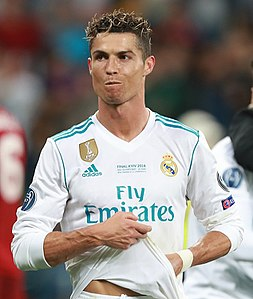

Cristiano Ronaldo
Cristiano Ronaldo dos Santos Aveiro GOIH ComM (Portuguese pronunciation: born 5 February 1985) is a Portuguese professional footballer who plays as a forward for Serie A club Juventus and captains the Portugal national team. Often considered the best player in the world and widely regarded as one of the greatest players of all time, Ronaldo has won five Ballon d'Or awards and four European Golden Shoes, both of which are records for a European player. He has won 31 major trophies in his career, including seven league titles, five UEFA Champions Leagues, one UEFA European Championship, and one UEFA Nations League title. Ronaldo holds the records for the most goals (134) and assists (42) in the history of the UEFA Champions League. He is one of the few recorded players to have made over 1,000 professional career appearances and has scored over 790 senior career goals for club and country. He is also the second male to score 100 international goals and the first European one to achieve the feat.
Born and raised in Madeira, Ronaldo began his senior club career playing for Sporting CP, before signing with Manchester United in 2003, aged 18. After winning the FA Cup in his first season, he helped United win three successive Premier League titles, the UEFA Champions League, and the FIFA Club World Cup; at age 23, he won his first Ballon d'Or. In 2009, Ronaldo was the subject of the then-most expensive association football transfer when signed for Real Madrid in a transfer worth €94 million (£80 million). There, he won 15 trophies, including two La Liga titles, two Copas del Rey, and four UEFA Champions League titles, and became the club's all-time top goalscorer. After joining Madrid, Ronaldo finished runner-up for the Ballon d'Or three times, behind Lionel Messi – his perceived career rival – before winning back-to-back Ballons d'Or from 2013–2014 and again from 2016–2017. After winning a third consecutive Champions League title in 2018, Ronaldo became the first player to win the trophy five times. In 2018, he signed for Juventus in a transfer worth an initial €100 million (£88 million), the highest fee ever paid by an Italian club and the highest ever paid for a player over 30 years old. He won the Serie A title in his first two seasons with the club.
Ronaldo made his senior international debut for Portugal in 2003 at age 18, and has since earned over 170 caps, including appearing and scoring in ten major tournaments, becoming Portugal's most capped player and his country's all-time top goalscorer. He scored his first international goal at Euro 2004 where he helped Portugal reach the final and assumed full captaincy of the national team in July 2008. In 2015 Ronaldo was named the best Portuguese player of all time by the Portuguese Football Federation. The following year he led Portugal to their first triumph in a major tournament by winning Euro 2016, and received the Silver Boot as the second-highest goalscorer of the tournament.
One of the most marketable and famous athletes in the world, Ronaldo was ranked the world's highest-paid athlete by Forbes in 2016 and 2017 and the world's most famous athlete by ESPN from 2016 to 2019. Time included him on their list of the 100 most influential people in the world in 2014.Ronaldo is the first footballer, as well as only the third sportsman, to earn $1 billion in their career.
Early life
Cristiano Ronaldo dos Santos Aveiro was born in São Pedro, Funchal, on the Portuguese island of Madeira, and grew up in Santo António, Funchal. He is the fourth and youngest child of Maria Dolores dos Santos Viveiros da Aveiro, a cook, and José Dinis Aveiro, a municipal gardener and part-time kit man.His great-grandmother on his father's side, Isabel da Piedade, was from the island of São Vicente, Cape Verde.He has one older brother, Hugo, and two older sisters, Elma and Liliana Cátia "Katia".His mother revealed that she wanted to abort him due to poverty, his father's alcoholism and having too many children already, but her doctor refused to perform the procedure.Ronaldo grew up in a Catholic and impoverished home, sharing a room with all his siblings.
As a child, Ronaldo played for Andorinha from 1992 to 1995,where his father was the kit man,and later spent two years with Nacional. In 1997, aged 12, he went on a three-day trial with Sporting CP, who signed him for a fee of £1,500.He subsequently moved from Madeira to Alcochete, near Lisbon, to join Sporting youth football academy.By age 14, Ronaldo believed he had the ability to play semi-professionally, and agreed with his mother to cease his education in order to focus entirely on football.While popular with other students at school, he had been expelled after throwing a chair at his teacher, who he said had "disrespected" him.However, one year later, he was diagnosed with a racing heart, a condition that could have forced him to give up playing football.Ronaldo underwent heart surgery where a laser was used to cauterise multiple cardiac pathways into one, altering his resting heart rate.He was discharged from the hospital hours after the procedure and resumed training a few days later.
Club career
Sporting CP
At age 16, Ronaldo was promoted from Sporting's youth team by first-team manager László Bölöni, who was impressed with his dribbling.He subsequently became the first player to play for the club's under-16, under-17 and under-18 teams, the B team, and the first team, all within a single season.A year later, on 29 September 2002, Ronaldo made his debut in the Primeira Liga, against Braga and on 7 October 2002, he scored two goals against Moreirense in their 3–0 win.Over the course of the 2002–03 season, his representatives suggested the player to Liverpool manager Gérard Houllier and Barcelona president Joan Laporta.Manager Arsène Wenger, who was interested in signing the winger, met with him at Arsenal's grounds in November to discuss a possible transfer.
Manchester United manager Alex Ferguson, however, was determined to acquire Ronaldo on a permanent move urgently, after Sporting defeated United 3–1 at the inauguration of the Estádio José Alvalade in August 2003. Initially, United had just planned to sign Ronaldo and then loan him back to Sporting for a year.Having been impressed by him, however, the Manchester United players urged Ferguson to sign him. After the game, Ferguson agreed to pay Sporting £12.24 million for what he considered to be "one of the most exciting young players" he had ever seen.A decade after his departure from the club, in April 2013, Sporting honoured Ronaldo by selecting him to become their 100,000th member.
Manchester United
2003–2007: Development and breakthrough
Ronaldo became Manchester United's first Portuguese player when he signed before the 2003–04 season.His transfer fee of £12.24 million made him, at the time, the most expensive teenager in English football history.Although he requested the number 28, his number at Sporting, he received the number 7 shirt, which had previously been worn by such United players as George Best, Eric Cantona and David Beckham.Wearing the number 7 became an extra source of motivation for Ronaldo.A key element in his development during his time in England proved to be his manager, Alex Ferguson, of whom he later said, "He's been my father in sport, one of the most important and influential factors in my career.
Ronaldo made his debut in the Premier League in a 4–0 home victory over Bolton Wanderers on 16 August 2003, receiving a standing ovation when he came on as a substitute. His performance earned praise from George Best, who hailed it as "undoubtedly the most exciting debut" he had ever seen. Ronaldo scored his first goal for Manchester United with a free-kick in a 3–0 win over Portsmouth on 1 November. Three other league goals followed in the second half of the campaign, the last of which came against Aston Villa on the final day of the season, a match in which he also received his first red card. Ronaldo ended his first season in English football by scoring the opening goal in United's 3–0 victory over Millwall in the FA Cup final, earning his first trophy.BBC pundit Alan Hansen described him as the star of the final.The British press had been critical of Ronaldo during the season for his "elaborate" step-overs in trying to beat a man,but teammate Gary Neville said he was "not a show pony, but the real thing", and predicted he would become a world class player.
At the start of 2005, Ronaldo played two of his best matches of the 2004–05 season, producing a goal and an assist against Aston Villa and scoring twice against rivals Arsenal.He played the full 120 minutes of the decisive match against Arsenal in the FA Cup final, which ended in a goalless draw, and scored his attempt in the lost penalty shoot-out.He scored Manchester United's 1000th Premier League goal on 29 October, their only strike in a 4–1 loss to Middlesbrough. Midway through the season, in November, he signed a new contract which extended his previous deal by two years to 2010. Ronaldo won his second trophy in English football, the Football League Cup, after scoring the third goal in United's 4–0 final victory over Wigan Athletic.
During his third season in England, Ronaldo was involved in several incidents. He had a one-match ban imposed on him by UEFA for a "one-fingered gesture" towards Benfica fans,and was sent off in the Manchester derby (a 3–1 defeat) for kicking Manchester City's former United player Andy Cole.Ronaldo clashed with a teammate, striker Ruud van Nistelrooy, who took offence at the winger's showboating style of play. Following the 2006 FIFA World Cup, in which he was involved in an incident where club teammate Wayne Rooney was sent off,Ronaldo publicly asked for a transfer, lamenting the lack of support he felt he had received from the club over the incident. United, however, denied the possibility of him leaving the club.
Although his World Cup altercation with Rooney resulted in Ronaldo being booed throughout the 2006–07 season, it proved to be his breakout year, as he broke the 20-goal barrier for the first time and won his first Premier League title. An important factor in this success was his one-to-one training by first-team coach René Meulensteen, who taught him to make himself more unpredictable, improve his teamwork, call for the ball, and capitalise on goalscoring opportunities rather than waiting for the chance to score the aesthetically pleasing goals for which he was already known. He scored three consecutive braces at the end of December, against Aston Villa (a victory that put United on top of the league), Wigan Athletic and Reading. Ronaldo was named the Premier League Player of the Month in November and December, becoming only the third player to receive consecutive honours.
2007–2008: Collective and individual success
At the quarter-final stage of the 2006–07 UEFA Champions League, Ronaldo scored his first goals in his 30th match in the competition,finding the net twice in a 7–1 victory over Roma. He subsequently scored four minutes into the first semi-final leg against Milan, which ended in a 3–2 win,but was marked out of the second leg as United lost 3–0 at the San Siro.He also helped United reach the FA Cup final, but the decisive match against Chelsea ended in a 1–0 defeat.Ronaldo scored the only goal in the Manchester derby on 5 May 2007 (his 50th goal for the club), as Manchester United claimed their first Premier League title in four years.As a result of his performances, he amassed a host of personal awards for the season. He won the Professional Footballers' Association's Player's Player, Fans' Player, and Young Player of the Year awards, as well as the Football Writers' Association's Footballer of the Year award,becoming the first player to win all four main PFA and FWA honours.His club wages were concurrently upgraded to £120,000 a week (£31 million total) as part of a five-year contract extension with United. At the end of 2007, Ronaldo was named runner-up to Kaká for the Ballon d'Or,and came third, behind Kaká and Lionel Messi, in the running for the FIFA World Player of the Year award
Ronaldo scored his first and only hat-trick for Manchester United in a 6–0 win against Newcastle United on 12 January 2008, bringing United up to the top of the Premier League table. A month later, on 19 March, he captained United for the first time in a home win over Bolton, and scored both goals of the match. His second goal was his 33rd of the campaign, which bettered George Best's total of 32 goals in the 1967–68 season, thus setting the club's new single-season record by a midfielder. His 31 league goals earned him the Premier League Golden Boot, as well as the European Golden Shoe, which made him the first winger to win the latter award. He additionally received the PFA Players' Player of the Year and FWA Footballer of the Year awards for the second consecutive season.
In the knockout stage of the Champions League, Ronaldo scored the decisive goal against Lyon, which helped United advance to the quarter-finals 2–1 on aggregate, and, while playing as a striker, scored with a header in the 3–0 aggregate victory over Roma. United advanced to the final against Chelsea in Moscow, where, despite his opening goal being negated by an equaliser and his penalty being saved in the shoot-out, Manchester United emerged victorious. As the Champions League top scorer, Ronaldo was named the UEFA Club Footballer of the Year.
Ronaldo scored a total of 42 goals in all competitions during the 2007–08 season, his most prolific campaign during his time in England. He missed three matches after headbutting a Portsmouth player at the start of the season, an experience he said taught him not to let opponents provoke him. As rumours circulated of Ronaldo's interest in moving to Real Madrid, United filed a tampering complaint with governing body FIFA over Madrid's alleged pursuit of their player, but they declined to take action. FIFA president Sepp Blatter asserted that the player should be allowed to leave his club, describing the situation as "modern slavery". Despite Ronaldo publicly agreeing with Blatter, he remained at United for another year.
2008–2009: Final season and continued success
Ahead of the 2008–09 season, on 7 July, Ronaldo underwent ankle surgery, which kept him out of action for 10 weeks. Following his return, he scored his 100th goal in all competitions for United with the first of two free kicks in a 5–0 win against Stoke City on 15 November, which meant he had now scored against all 19 opposition teams in the Premier League at the time. At the close of 2008, Ronaldo helped United win the FIFA Club World Cup in Japan, assisting the final-winning goal against Liga de Quito and winning the Silver Ball in the process. He subsequently became United's first Ballon d'Or winner since George Best in 1968,and the first Premier League player to be named the FIFA World Player of the Year.
His match-winning goal in the second leg against Porto, a 40-yard strike, earned him the inaugural FIFA Puskás Award, presented by FIFA in recognition of the best goal of the year;[ he later called it the best goal he had ever scored.United advanced to the final in Rome, where he made little impact in United's 2–0 defeat to Barcelona.Ronaldo ended his time in England with nine trophies, as United claimed their third successive Premier League title and a Football League Cup.He finished the campaign with 26 goals in all competitions, 16 goals fewer than the previous season, in four more appearances.His final goal for Manchester United came on 10 May 2009 with a free kick in the Manchester derby at Old Trafford.
Real Medrid
2009-2013: World record transfer and La Liga championship
Ahead of the 2009–10 season, Ronaldo joined Real Madrid for a world record transfer fee at the time, of £80 million (€94 million).His contract, which ran until 2015, was worth €11 million per year and contained a €1 billion buy-out clause. At least 80,000 fans attended his presentation at the Santiago Bernabéu, surpassing the 25-year record of 75,000 fans who had welcomed Diego Maradona at Napoli. Since club captain Raúl already wore the number 7 (the number Ronaldo wore at Manchester United), Ronaldo received the number 9 shirt, which was presented to him by former Madrid player Alfredo Di Stéfano.
Ronaldo made his debut in La Liga on 29 August 2009, against Deportivo La Coruña, and scored from the penalty spot in Madrid's 3–2 home win. He scored in each of his first four league fixtures with the club, the first Madrid player to do so. His first Champions League goals for the club followed with two free kicks in the first group match against Zürich.His strong start to the season, however, was interrupted when he suffered an ankle injury in October while on international duty, which kept him sidelined for seven weeks. A week after his return, he received his first red card in Spain in a match against Almería. Midway through the season, Ronaldo placed second in the running for the Ballon d'Or and the FIFA World Player of the Year award, behind Lionel Messi of Barcelona, Madrid's historic rivals. He finished the campaign with 33 goals in all competitions, including a hat-trick in a 4–1 win against Mallorca on 5 May 2010, his first in the Spanish competition. His first season at Real Madrid ended trophyless.
Following Raúl's departure, Ronaldo was handed the number 7 shirt for Real Madrid before the 2010–11 season. His subsequent return to his Ballon d'Or-winning form was epitomised when, for the first time in his career, he scored four goals in a single match during a 6–1 rout against Racing Santander on 23 October. His haul concluded a goalscoring run of six consecutive matches (three in La Liga, one in the Champions League, and two for Portugal) totalling 11 goals, the most he had scored in a single month. Ronaldo subsequently scored further hat-tricks against Athletic Bilbao, Levante, Villarreal, and Málaga. Despite his performance, he did not make the podium for the inaugural FIFA Ballon d'Or at the end of 2010.
During a historical series of four Clásicos against rivals Barcelona in April 2011, Ronaldo scored twice to equal his personal record of 42 goals in all competitions in a single season. Although he failed to find the net during Madrid's eventual elimination in the Champions League semi-finals, he equalised from the penalty spot in the return league game and scored the match-winning goal in the 103rd minute of the Copa del Rey final, winning his first trophy in Spain. His two goals in the last match of the season, against Almería, made him the first player in La Liga to score 40 goals. In addition to the Pichichi Trophy, Ronaldo consequently won the European Golden Shoe for a second time, becoming the first player to win the award in two different leagues.
During the following campaign, the 2011–12 season, Ronaldo surpassed his previous goalscoring feats to achieve a new personal best of 60 goals across all competitions. He regained a place on the FIFA Ballon d'Or podium, as runner-up to Messi, after scoring hat-tricks against Real Zaragoza, Rayo Vallecano, Málaga, Osasuna, and Sevilla, the last of which put Madrid on top of the league by the season's midway point.
Ronaldo found greater team success in the league, as he helped Real Madrid win their first La Liga title in four years, with a record 100 points. Following a hat-trick against Levante, further increasing Madrid's lead over Barcelona, he scored his 100th league goal for Madrid in a 5–1 win over Real Sociedad on 24 March 2012, a milestone he reached in just 92 matches across three seasons, breaking the previous club record held by Ferenc Puskás. Another hat-trick in the Madrid derby against Atlético Madrid brought his total to 40 league goals, equalling his record of the previous season.His final league goal of the campaign, against Mallorca, took his total to 46 goals, four short of the new record set by Messi, and earned him the distinction of being the first player to score against all 19 opposition teams in a single season in La Liga.
Ronaldo began the 2012–13 season by lifting the Supercopa de España, his third trophy in Spain. With a goal in each leg by the Portuguese, Madrid won the Spanish Super Cup on away goals following a 4–4 aggregate draw against Barcelona. Although Ronaldo publicly commented that he was unhappy with a "professional issue" within the club, prompted by his refusal to celebrate his 150th goal for Madrid,his goalscoring rate did not suffer. After netting a hat-trick, including two penalties, against Deportivo La Coruña, he scored his first hat-trick in the Champions League in a 4–1 victory over Ajax. Four days later, he became the first player to score in six successive Clásicos when he hit a brace in a 2–2 draw at Camp Nou. His performances in 2012 again saw Ronaldo voted second in the running for the FIFA Ballon d'Or, finishing runner-up to four-time winner Messi.
2013–2015: Consecutive FIFA Ballon d'Or wins and La Décima
Following the 2012–13 winter break, Ronaldo captained Real Madrid for the first time in an official match, scoring a brace to lift 10-man Madrid to a 4–3 victory over Real Sociedad on 6 January. He subsequently became the first non-Spanish player in 60 years to captain Madrid in El Clásico on 30 January, a match which also marked his 500th club appearance. Three days prior, he had scored his 300th club goal as part of a perfect hat-trick against Getafe. He scored his 200th goal for Real Madrid on 8 May in a 6–2 win against Málaga, reaching the landmark in 197 games.He helped Madrid reach the Copa del Rey final by scoring twice in El Clásico, which marked the sixth successive match at Camp Nou in which he had scored, a Real Madrid record.In the final, he headed the opening goal of an eventual 2–1 defeat to Atlético Madrid, but was shown a red card for violent conduct. In the first knockout round of the Champions League, Ronaldo faced his former club Manchester United for the first time. After scoring the equaliser in a 1–1 draw at the Santiago Bernabéu, he scored the match-winning goal in a 2–1 victory at Old Trafford, his first return to his former home ground. He did not celebrate scoring against his former club as a mark of respect.After scoring three goals against Galatasaray in the quarters, he scored Madrid's only goal in the 4–1 away defeat to Borussia Dortmund in the semi-finals, but failed to increase his side's 2–0 victory in the second leg, as they were eliminated at the semi-final stage for the third consecutive year.
Ronaldo scored a record 17 UEFA Champions League goals during the 2013–14 La Décima season.
At the start of the 2013–14 season, Ronaldo signed a new contract that extended his stay by three years to 2018, with a salary of €17 million net, making him briefly the highest-paid player in football. He was joined at the club by winger Gareth Bale, whose world record transfer fee of €100 million surpassed the fee Madrid had paid for Ronaldo four years prior. Together with striker Karim Benzema, they formed an attacking trio popularly dubbed "BBC", an acronym of Bale, Benzema, and Cristiano, and a play off the name of the public service broadcaster. By late November, Ronaldo had scored 32 goals from 22 matches for both club and country, including hat-tricks against Galatasaray, Sevilla, Real Sociedad, Northern Ireland, and Sweden. He ended 2013 with 69 goals in 59 appearances, his highest year-end goal tally. He received the FIFA Ballon d'Or, an amalgamation of the Ballon d'Or and the FIFA World Player of the Year award, for the first time in his career.
Concurrently with his individual achievements, Ronaldo enjoyed his greatest team success in Spain to date, as he helped Real Madrid win La Décima, their tenth European Cup. His goal in a 3–0 home win over Borussia Dortmund (his 100th Champions League match) took his total for the season to 14 goals, equalling the record Messi had set two years before. After hitting a brace in a 4–0 defeat of Bayern Munich at the Allianz Arena, he scored from the penalty spot in the 120th minute of the 4–1 final victory over Atlético Madrid, becoming the first player to score in two European Cup finals for two different winning teams. His overall performance in the final was subdued as a result of patellar tendinitis and related hamstring problems, which had plagued him in the last months of the campaign. Ronaldo played the final against medical advice, later commenting: "In your life you do not win without sacrifices and you must take risks."As the Champions League top goalscorer for the third time, with a record 17 goals, he was named the UEFA Best Player in Europe.
In the Copa del Rey, Ronaldo helped Madrid reach the final by scoring two penalties against Atlético Madrid at the Vicente Calderón, the first of which meant he had now scored in every single minute of a 90-minute football match. His continued issues with his knee and thigh caused him to miss the final, where Real Madrid defeated Barcelona 2–1 to claim the trophy. Ronaldo scored 31 goals in 30 league games, which earned him the Pichichi and the European Golden Shoe, receiving the latter award jointly with Liverpool striker Luis Suárez. Among his haul was his 400th career goal, in 653 appearances for club and country, which came with a brace against Celta Vigo on 6 January; he dedicated his goals to compatriot Eusébio, who had died two days before.A last-minute, back-heeled volley scored against Valencia on 4 May (his 50th goal in all competitions) was recognised as the best goal of the season by the Liga de Fútbol Profesional, which additionally named Ronaldo the Best Player in La Liga.
During the next campaign, the 2014–15 season, Ronaldo set a new personal best of 61 goals in all competitions, starting with both goals in Real Madrid's 2–0 victory over Sevilla in the UEFA Super Cup.He subsequently achieved his best-ever goalscoring start to a league campaign, with a record 15 goals in the first eight rounds of La Liga. His record 23rd hat-trick in La Liga, scored against Celta Vigo on 6 December, made him the fastest player to reach 200 goals in the Spanish league, as he reached the milestone in only his 178th game. After lifting the FIFA Club World Cup with Madrid in Morocco, and becoming the joint-top assist provider of the competition alongside Toni Kroos, Ronaldo received a second successive FIFA Ballon d'Or, joining Johan Cruyff, Michel Platini, and Marco van Basten as a three-time Ballon d'Or winner.
2015–2017: All-time Real Madrid top scorer and La Undécima

Madrid finished in second-place in La Liga in the 2014–15 season and exited at the semi-final stage in the Champions League. In the latter competition, Ronaldo extended his run of scoring away to a record 12 matches with his strike in a 2–0 win against Schalke 04. He scored both of his side's goals in the semi-finals against Juventus, where Madrid were eliminated 2–3 on aggregate. With 10 goals, he finished the campaign as top scorer for a third consecutive season, alongside Messi and Neymar. In La Liga, for the first time in his career he scored five goals in one game, including an eight-minute hat-trick, in a 9–1 rout of Granada on 5 April. His 300th goal for his club followed three days later in a 2–0 win against Rayo Vallecano. Subsequent hat-tricks against Sevilla, Espanyol, and Getafe took his number of hat-tricks for Real Madrid to 31, surpassing Di Stéfano's club record of 28. He finished the season with 48 goals, winning a second consecutive Pichichi and the European Golden Shoe for a record fourth time.
At the start of his seventh season at Real Madrid, the 2015–16 campaign, Ronaldo became the club's all-time top scorer, first in the league and then in all competitions. His five-goal haul in a 6–0 away win over Espanyol on 12 September took his tally in La Liga to 230 goals in 203 games, surpassing the club's previous recordholder, Raúl. A month later, on 17 October, he again surpassed Raúl when he scored the second goal in a 3–0 defeat of Levante at the Bernabéu to take his overall total for the club to 324 goals. Ronaldo also became the all-time top scorer in the Champions League with a hat-trick in the first group match against Shakhtar Donetsk, having finished the previous season level with Messi on 77 goals. Two goals against Malmö FF in a 2–0 away win on 30 September saw him reach the milestone of 500 career goals for both club and country. He subsequently became the first player to score double figures in the competition's group stage, setting the record at 11 goals, including another four-goal haul against Malmö.
Ronaldo's four goals in a 7–1 home win over Celta de Vigo on 5 March 2016 took his total to 252 goals in La Liga, becoming the competition's second-highest scorer in history behind Messi. He scored a hat-trick against VfL Wolfsburg to send his club into the Champions League semi-finals. The treble took his tally in the competition to 16 goals, making him the top scorer for the fourth consecutive season, and the fifth overall. Suffering apparent fitness issues, Ronaldo gave a poorly-received performance in the final against Atlético Madrid, in a repeat of the 2014 final, though his penalty in the subsequent shoot-out secured La Undécima, Madrid's 11th victory. For the sixth successive year, he ended the season having scored over 50 goals across all competitions. For his efforts during the season, he received the UEFA Best Player in Europe Award for a second time.
Ronaldo missed Real Madrid's first three matches of the 2016–17 season, including the 2016 UEFA Super Cup against Sevilla, as he continued to rehabilitate the knee injury he suffered against France in the final of Euro 2016. On 15 September, he did not celebrate his late free kick equaliser against Sporting CP in the Champions League, with Ronaldo stating post match, "they made me who I am." On 7 November, his contract was updated for the second time and extended by three years to 2021. On 19 November, he scored a hat-trick in a 3–0 away win against Atlético Madrid, making him the all-time top scorer in the Madrid derby with 18 goals. On 15 December, Ronaldo scored his 500th club career goal in the 2–0 victory over Club América in the semi-finals of the FIFA Club World Cup. He then scored a hat-trick in the 4–2 win over Japanese club Kashima Antlers in the final. Ronaldo finished the tournament as top scorer with four goals and was also named player of the tournament. He won the Ballon d'Or for a fourth time and the inaugural Best FIFA Men's Player, a revival of the former FIFA World Player of the Year, largely owing to his success with Portugal in winning Euro 2016.

2017–2018: Fifth Champions League title and fifth Ballon d'Or
In the 2016–17 UEFA Champions League quarter-final against Bayern Munich in April, Ronaldo scored both goals in a 2–1 away win which saw him make history in becoming the first player to reach 100 goals in UEFA club competition.[214] In the second leg of the quarter-finals, Ronaldo scored a 'perfect' hat-trick and reached his 100th UEFA Champions League goal, becoming the first player to do so as Real Madrid again defeated Bayern 4–2 after extra-time.[215] On 2 May, Ronaldo scored another hat-trick as Real Madrid defeated Atlético Madrid 3–0 in the Champions League semi-final first leg. On 17 May, Ronaldo overtook Jimmy Greaves as the all-time top scorer in the top five European leagues, scoring twice against Celta de Vigo.[216] He finished the season with 42 goals in all competitions as he helped Madrid to win their first La Liga title since 2012.[217] In the 2017 Champions League final, Ronaldo scored two goals in the victory against Juventus and became the top goalscorer for the fifth-straight season, and sixth overall, with 12 goals, while also becoming the first player to score in three finals in the Champions League era as well as reaching his 600th senior career goal.[218] Madrid also became the first team to win back-to-back finals in the Champions League era.
At the start of the 2017–18 season, Ronaldo scored Madrid's second goal in a 3–1 Supercopa de España first-leg victory over Barcelona at Camp Nou.[220] On 23 October, his performances in the first half of 2017 saw him claim his fifth FIFA Player of the Year award by receiving The Best FIFA Men's Player award for the second consecutive year. On 6 December, he became the first player to score in all six Champions League group stage matches with a curling strike at home to Borussia Dortmund. A day later, Ronaldo won the Ballon d'Or for a fifth time, receiving the award on the Eiffel Tower in Paris. On 16 December he scored a free kick winner as Madrid won their second FIFA Club World Cup title in a row by beating Gremio in the final. On 3 March 2018, he scored two goals in a 3–1 home win over Getafe, his first being his 300th La Liga goal in his 286th La Liga appearance, making him the fastest player to reach this landmark and only the second player to do so after Messi. On 18 March, he reached his 50th career hat-trick, scoring four goals in a 6–3 win against Girona.
On 3 April, Ronaldo scored the first two goals in a 3–0 away win against Juventus in the quarter-finals of the 2017–18 UEFA Champions League, with his second goal being an acrobatic bicycle kick. Described as a "PlayStation goal" by Juventus defender Andrea Barzagli, with Ronaldo's foot approximately 7 ft 7 in (2.31 m) off the ground, it garnered him a standing ovation from the opposing fans in the stadium, as well as a plethora of plaudits from peers, pundits and coaches.On 11 April, he scored the goal Real Madrid needed to advance to the semi-final, in the second leg of the Champions League quarter-final at home to Juventus, from a 98th-minute injury time penalty in a 3–1 defeat, with an overall 4–3 aggregate win.[230] It was also his tenth goal against Juventus, a Champions League record against a single club. In the final of the tournament, on 26 May, Real Madrid defeated Liverpool 3–1, winning Ronaldo his fifth Champions League title as he became the first player to win the trophy five times. He finished as the top scorer of the tournament for the sixth consecutive season, ending the campaign with 15 goals. After the final, Ronaldo referred to his time with the Champions League winners in the past tense, sparking speculation that he could leave Real Madrid.

Juventus
2018-2019: Debute season and first Serie A title
Despite months of negotiation to sign a new Real Madrid contract, on 10 July 2018, Ronaldo signed a four-year contract with Italian club Juventus after completing a €100 million transfer, which included an additional €12 million in other fees, and solidarity contributions to Ronaldo's youth clubs. The transfer was the highest ever for a player over 30 years old, and the highest paid by an Italian club. Upon signing, Ronaldo cited his need for a new challenge as his rationale for departing Madrid, but later attributed the transfer to the lack of support he felt was shown by club president Florentino Pérez.
On 16 September, Ronaldo scored his first goals for Juventus in his fourth appearance for the club in a 2–1 home win over Sassuolo in Serie A. His second was the 400th league goal of his career. On 19 September, in his first Champions League match for Juventus, he was sent off in the 29th minute for "violent conduct", his first red card in 154 Champions League appearances. Ronaldo became the first player in history to win 100 Champions League matches, setting up Mario Mandžukić's winner in a 1–0 home victory over Valencia, which sealed Juventus's passage to the knock-out stages of the competition. In December, he scored his tenth Serie A goal of the season, from the penalty spot, netting the final goal in a 3–0 away win over rivals Fiorentina; with this goal, Ronaldo became the first Juventus player since John Charles in 1957 to score 10 goals in his first 14 league games for the club. After placing second in both the UEFA Men's Player of the Year and The Best FIFA Men's Player for the first time in three years, behind Luka Modrić, Ronaldo performances in 2018 also saw him voted runner-up for the 2018 Ballon d'Or, finishing once again behind his former Real Madrid teammate.
Ronaldo won his first trophy with the club in January 2019, the 2018 Supercoppa Italiana, after he scored the game-winning and only goal from a header against A.C. Milan.On 10 February, Ronaldo scored in a 3–0 away win over Sassuolo; the ninth consecutive away game in which he had scored for Juventus in the league, which enabled him to equal Giuseppe Signori's single season Serie A record of most consecutive away games with at least one goal. On 12 March, Ronaldo scored a hat-trick in a 3–0 home win against Atlético Madrid in the second leg of the Champions League round of 16, helping Juventus overcome a two-goal deficit to reach the quarter-finals. The following month, Ronaldo scored his 125th goal in the competition, opening the scoring in a 1–1 away draw in the first leg of Juventus' quarter-final against Ajax, on 10 April. In the second leg in Turin on 16 April, he scored the opening goal of the match in the first half, but Juventus eventually lost the match 2–1, and were eliminated from the competition.On 20 April, Ronaldo played in the Scudetto clinching game against rivals Fiorentina as Juventus won their eighth successive Serie A title after a 2–1 home win, thereby becoming the first player to win league titles in England, Spain and Italy.On 27 April, he scored his 600th club goal, the equaliser in a 1–1 away draw against rivals Inter. Finishing his first Serie A campaign with 21 goals and 8 assists, Ronaldo won the inaugural Serie A Award for Most Valuable Player.
2019–2020: Second consecutive Serie A title
Ronaldo appearing for Juventus against Torino during the 2019–20 season
Ronaldo scored his first goal of the 2019–20 season for Juventus in a 4–3 home win over Napoli in Serie A on 31 August 2019. On 23 September, he came in 3rd place for the 2019 Best FIFA Men's Player Award. On 1 October, he reached several milestones in Juventus's 3–0 group stage win over Bayer Leverkusen in the Champions League: his goal during the match saw him score for the 14th consecutive Champions League season, equalling Raúl and Messi's record; he also broke Iker Casillas' record for most Champions League wins of all time, and equalled Raúl's record of scoring against 33 different Champions League opponents. On 6 November, in a 2–1 away win against Lokomotiv Moscow in the Champions League group stage, he equalled Paolo Maldini as the second-most capped player in UEFA club competitions with 174 appearances. On 18 December, Ronaldo performed an athletic feet, in leaping to a height of 8.39 ft (2.56m) – higher than the crossbar (8 ft) – before heading the winning goal in a 2–1 away win for Juventus against Sampdoria in Serie A.
Ronaldo scored his first Serie A hat-trick on 6 January 2020, in a 4–0 home win against Cagliari. His 56th career hat-trick, he became only the second player after Alexis Sánchez to score hat-tricks in the Premier League, La Liga and Serie A. On 2 February, he scored twice from the penalty spot in a 3–0 home win over Fiorentina, equalling David Trezeguet's club record of nine consecutive appearances in Serie A with at least one goal. He broke the club record six days later, when he scored in his tenth consecutive league game, a 2–1 away defeat to Hellas Verona. On 22 February, Ronaldo scored for a record-equalling 11th consecutive Serie A game (a record shared with Gabriel Batistuta and Fabio Quagliarella), in what was his 1,000th senior professional game, in a 2–1 away win for Juventus against SPAL.
On 22 June, he scored a penalty in a 2–0 away win over Bologna, overtaking Rui Costa to become the highest scoring Portuguese player in Serie A history. On 4 July, he assisted Juan Cuadrado's goal and later scored his 25th league goal of the season from a free kick in a 4–1 home win over rivals Torino, becoming the first Juventus player to achieve this milestone since Omar Sívori in 1961; the goal was also his first from a free kick with the club, after 43 attempts.
On 20 July, Ronaldo scored twice in a 2–1 home win over Lazio; his first goal was his 50th in Serie A. He became the second fastest player to reach this landmark, after Gunnar Nordahl, and the first player in history to reach 50 goals in the Premier League, La Liga, and Serie A. With his brace, he also reached 30 league goals for the season, becoming just the third player in Juventus's history to reach that milestone in a single season,after Felice Borel in 1933–34 and John Hansen in 1951–52. Moreover, he became the oldest player, at the age of 35 years and 166 days, to score over 30 goals in one of the five top European leagues since Ronnie Rooke with Arsenal in 1948. On 26 July, he scored the opening goal in a 2–0 home win over Sampdoria, which saw Juventus crowned Serie A champions for a ninth consecutive time. He finished his second Serie A campaign with a total of 31 goals and 6 assists, which made him the second–highest goalscorer in the league behind only European Golden Shoe winner Ciro Immobile, with 36 goals, who also equalled Gonzalo Higuaín's record for most goals in a single Serie A season. On 7 August, Ronaldo scored a brace in a 2–1 home win against Lyon in the second leg of the Champions League round of 16, which saw him finish the season with 37 goals in all competitions; the tally allowed him to break Felice Borel's club record of 36 goals in a single season, which he had set in 1933–34. However, despite the victory, Juventus tied with Lyon 2–2 on aggregate, and were eliminated from the competition on the away goals rule.
2020–present: Third season in Italy
On 20 September 2020, Ronaldo scored in Juventus's opening match of the season, a 3–0 home win over Sampdoria in Serie A. On 1 November, after Ronaldo took nearly three weeks to recover from COVID-19, he returned to action against Spezia where he came off the bench in the second half and scored within the first three minutes. He later scored a second goal from the penalty spot in an eventual 4–1 away win.On 2 December, he scored a goal against Dynamo Kyiv in a Champions League group stage match to reach his 750th senior career goal. Ronaldo played his 100th match in all competitions for Juventus on 13 December, scoring two penalties in a 3–1 away win to Genoa in the league, and bringing his goal tally to 79. On 2 March 2021, he scored a goal in a 3–0 win over Spezia in his 600th league match, to become the first player to score at least 20 goals in each of the past 12 consecutive seasons in the top five leagues of Europe. On 9 March, Juventus were knocked out of the Champions League at the round of 16 by Porto on the away goals rule (4–4 on aggregate). On 14 March, he scored his 57th career hat-trick in a 3–1 away win over Cagliari.